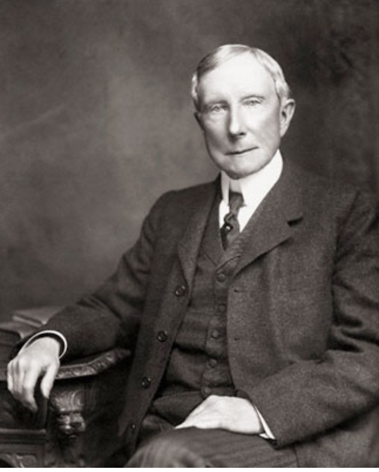

|  |
|
Джон Дэ́висон Рокфе́ллер (8 июля 1839, Ричфорд, штат Нью-Йорк — 23 мая 1937, Ормонд Бич, Флорида) — американский предприниматель, филантроп, первый долларовый миллиардер в истории человечества. Состояние 336 млрд USD (экв. 2010 г.) |
|
В 1870 году основал компанию Standard Oil и управлял ею до своего официального выхода на пенсию в 1897 году. Standard Oil была основана в штате Огайо как партнерство Джона Рокфеллера, его брата Вильяма Рокфеллера, Генри Флагера, Джабеза Боствика, химика Сэмьюэла Эндрюса и одного неголосующего партнера, Стефана Харкенса. Поскольку спрос на керосин и бензин резко вырос, богатство Рокфеллеров также возросло, и он стал самым богатым человеком в мире в своё время, его состояние на момент смерти составляло 1,4 миллиарда долларов США (номинал 1937 года) или 1,54 % ВВП США. С учётом инфляции The New York Times оценивает его богатство около 336 млрд долл. в эквиваленте 2010 года. |
|
Рокфеллер был одним из филантропов США, основателем Фонда Рокфеллера, жертвовавшим большие суммы на медицинские исследования, образование, в частности, на борьбу с жёлтой лихорадкой. Он также основал Чикагский и Рокфеллеровский университет. Был верующим баптистом и жертвовал часть своих доходов на поддержку церковных заведений в течение всей жизни. Отмечался как трудолюбивый, целеустремлённый и набожный христианин, за что партнёры называли его «Дьяконом». Он всегда проповедовал здоровый образ жизни и полный отказ от алкоголя и табакокурения. Имел четырёх дочерей и одного сына, который и унаследовал в управление Фонд Рокфеллера. 12 правил Джона Рокфеллера!
1. Меньше работай на кого-то. Чем больше ты работаешь не на себя, тем хуже живёшь. Работа — от слова «раб»!
2. Экономь деньги. Ищи, где можно купить товары дешевле и оптом.
3. Если у тебя мало денег, надо делать бизнес. Если денег нет совсем, надо делать бизнес срочно! Прямо сейчас!
4. Путь к огромному богатству лежит только через пассивный доход! Доход, который приходит к тебе независимо от твоих усилий. Создай источник пассивного дохода и живи в своё удовольствие!
5. Думай о том, как заработать минимум 50 000 в месяц. Можно больше. Меньше нельзя!
6. Деньги приходят к тебе через других людей. Общайся! Необщительные люди крайне редко становятся богатыми!
7. Бедное окружение практически всегда тянет тебя в бедность. Даже у очень богатых людей всегда найдутся родственники, друзья и прочие просители. Которые, если от них профессионально не отбиваться, быстро лишат тебя денег, целей и твоей мечты. Если ты человек пока бедный, то, скорее всего в твоём окружении просто не любят, не уважают, и некоторые даже ненавидят богатых. Всегда надо общаться с Оптимистами и Победителями.
8. Бедность возникает, если уклоняться от ответственности. Не придумывай себе оправдания — почему именно сейчас ты не можешь начать идти к своей цели. Нужно взять на себя ответственность и просто начать идти к цели, без оправданий.
9. Изучай биографии и мысли самых богатых людей мира.
10. Мечты это главное в твоей жизни! Мечты профессионально превращай в бизнес-программы и реализуй их на полный результат! Каждая, профессионально разработанная программа, должна содержать весь расчёт до самого полного желаемого результата. Только так и сбываются мечты!
11. Помогай людям бескорыстно, от чистого сердца! Но только тем, кому ты сам хочешь помочь. Отдавай 10% прибыли на благотворительность.
12. Создавай бизнес-системы и наслаждайся своими заработанными деньгами.
|